视频教程
Biangbiang面制作过程
一、名字的由来
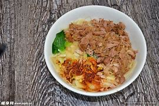
- Biangbiang面之所以叫这个名字，通俗的说法是：摔面条时，面条拍打案板发出的“biang biang”声音，因此得名。
- Biang字特点：汉字中笔画最多的字之一（57画），电脑无法输入，是陕西饮食文化的独特符号。
- 文化地位：已被列入陕西省非物质文化遗产，也是“陕西八大怪”中“面条像裤带”的代表。
二、和面（三光政策）
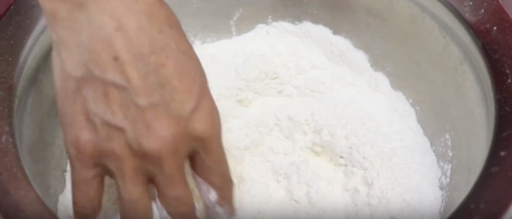
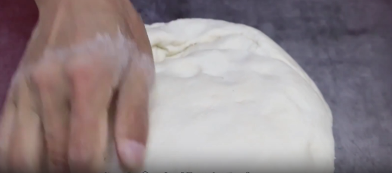
- 原料准备：面粉2斤、盐6克、水460克（分次加入）
- 和面步骤：分次加水，边加边搅拌，把粘到盆边的面撕下来
- 三光标准：盆光（盆干净）、手光（手干净）、面光（面团光滑）
- 关键提示：面一定要揉透揉光，这样才拉起来不断，而且拉出的面光滑劲道。
三、醒面与制剂
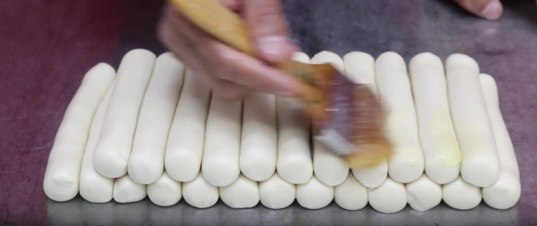
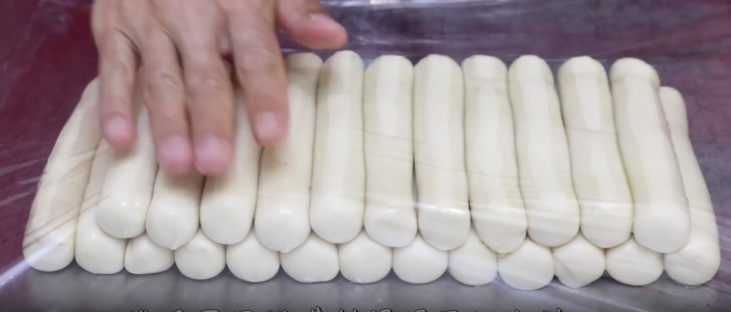
- 面团搓开，刷上油
- 搓成粗细均匀的长条，揪成大小均匀的小面团
- 码放整齐，刷上油（防止风干、防止互相粘连）
- 盖上保鲜膜，醒面40分钟
四、炸酱制作
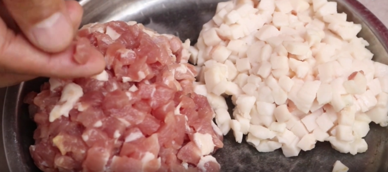
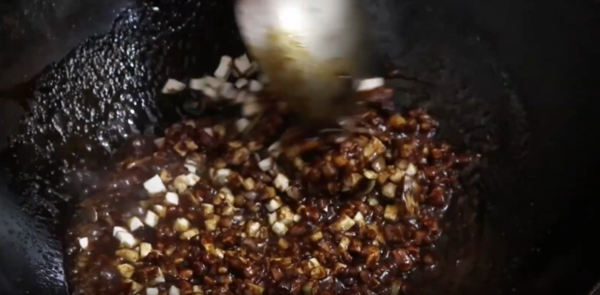
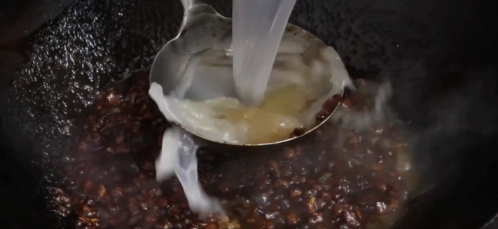
- 材料：肥肉、瘦肉分开切成小丁
- 油烧热，先下肥肉煸炒出油
- 出油后下入瘦肉，炒至变色，加入料酒、葱姜炒香
- 加入大酱、面酱、蚝油，炒出酱香和颜色
- 加入香菇丁，炒拌均匀（增加鲜味和口感）
- 加入骨头汤，烧开后小火炖至肉熟，汤汁浓稠后出锅
五、西红柿鸡蛋臊子
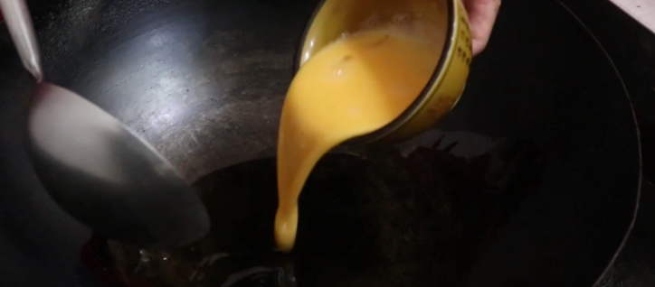
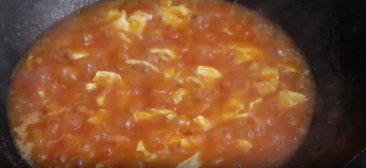
- 热油炒鸡蛋，炒熟后出锅备用
- 重新起锅，葱花、姜末炒香，加入西红柿炒软
- 加入盐、胡椒粉、少许糖调味
- 加入适量水（臊子要稍微多些汤汁，拌面才利口）
- 烧开后加入炒好的鸡蛋，煮到汤汁浓稠后出锅
- 提示：这是拌面的臊子，不是炒菜，所以汤汁要稍微多一些。
六、扯面（Biangbiang面的灵魂）
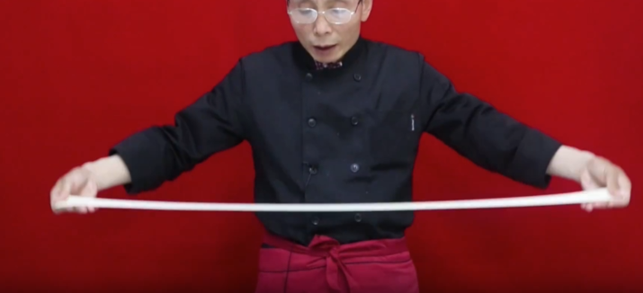
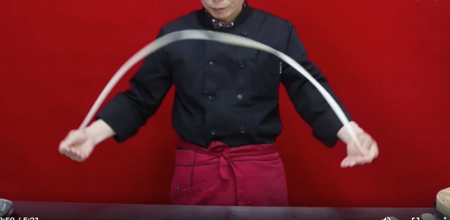
- 取醒好的面团，用手压开、擀开
- 擀到两边薄、中间厚（这样扯出来宽度均匀）
- 托起来，开始拉、开始摔，面条摔在案板上发出 “biang biang” 声
- 其他面团以此类推
- 成品标准：面条宽厚如裤腰带，宽约2-3寸，长约1米
七、煮面与调味（三合一）
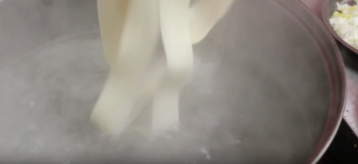
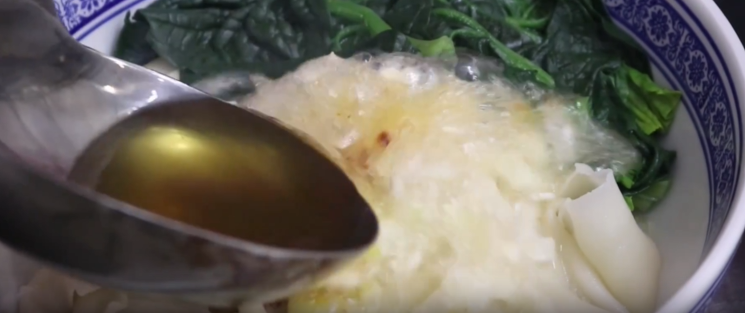
- 水烧开，下入扯好的面条
- 煮熟后捞出，放入蒜末、辣椒面
- 一勺热油浇上（“刺啦”一声，香气四溢）
- 加入西红柿鸡蛋臊子
- 加入炸酱臊子
- ✅ 完成：三合一 Biangbiang面制作完成！
八、成品标准
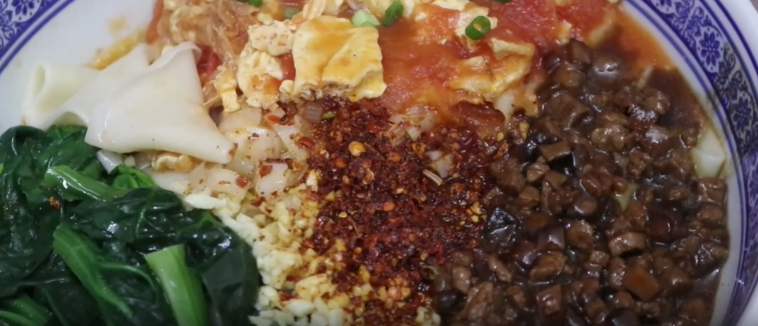
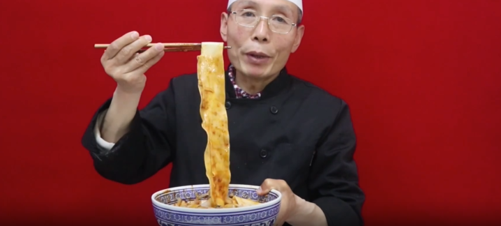
- 油润：面条表面油亮光泽
- 红亮：辣椒油红润诱人
- 光滑：面条表面光滑细腻
- 劲道：吃起来有嚼劲，不软烂
- 提示：炸酱和西红柿鸡蛋里面的味已经够了，喜欢吃醋的可以自己加点醋。